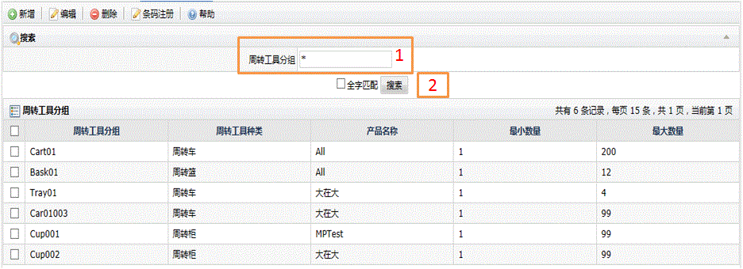
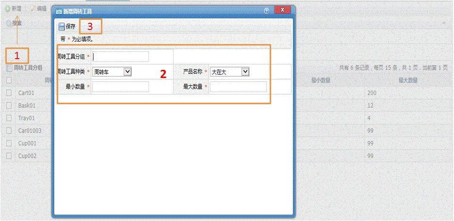
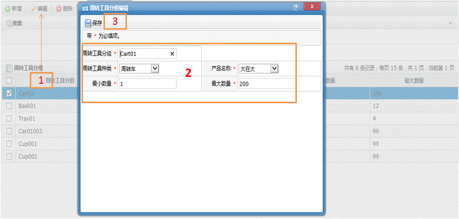
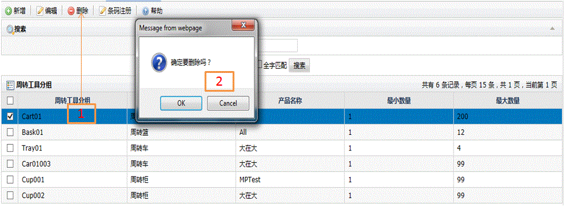
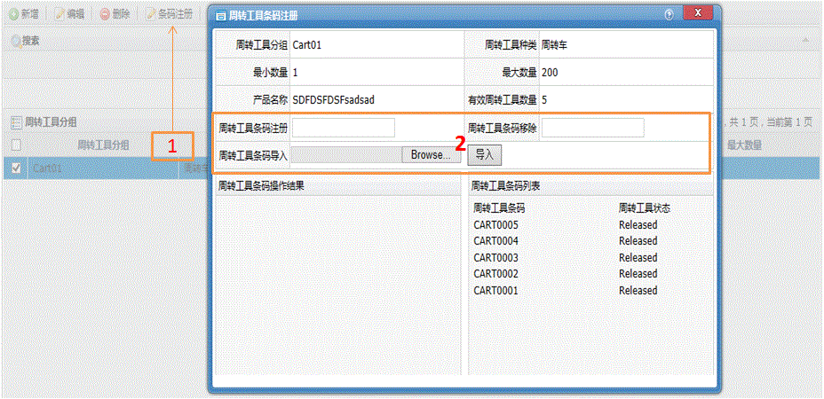

周转工具分组
字段描述
字段名
描述
周转工具分组
周转工具组的名称
周转工具类型
周转工具类别
产品名称
绑定的产品
最小数量
周转工具组所装物件的最小数量
最大数量
周转工具组所装物件的最大数量
周转工具条码注册
要归属于该周转工具组的条码
周转工具条码移除
要从该周转工具组移除出去的条码
周转工具条码导入
从指定格式的文件中批量导入到指定的周转工具组中
功能描述
显示系统所有的周转工具组，可执行编辑、新增、删除周转工具组以及条码注册到周转工具组操作
搜索周转工具组
1.输入周转工具组关键字；
2.点击搜索按钮后列表显示结果。

新增周转工具组
1.主页中直接单击工具栏中的新增按钮，弹出操作窗口；
2.选择或输入相关信息；
3.单击保存按钮。

编辑周转工具组
1.主页中选中记录后单击工具栏中的编辑按钮，弹出操作窗口；
2.选择或输入要修改的相关信息；
3.单击保存按钮。

删除周转工具组
1.在列表中选中记录后单击删除按钮；
2.在弹出的对话框中选择Ok或Cancel。

周转工具组条码注册
1.主页中选中记录后单击工具栏中的条码注册按钮，弹出操作窗口；
2.在条码注册中可单个单个进行条码注册，也可用条码导入功能从文件中批量导入条码。同时也可对已经注册的条码进行移除操作。
